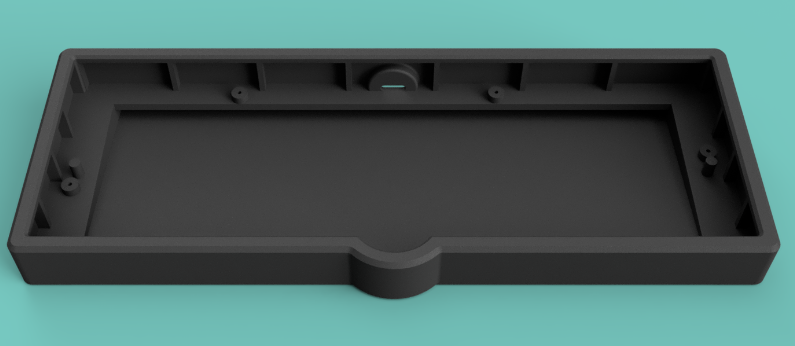

JLKB部分外壳3D打印文件
| 下载外壳内容 | 外形渲染参考 | 键盘外壳说明 | 打印文件下载 | 3D模型预览 |
|---|---|---|---|---|
| K16E3 | 一个16键+3旋钮+1摇杆或旋钮的小键盘，常规外形. | 上盖 下底 | 上盖预览 下底预览 | |
| K16E3 | 一个16键+3旋钮+1摇杆或旋钮的小键盘，带USB-HUb外形. | 上盖 下底 | 上盖预览 下底预览 | |
| K16E3 | 一个16键+3旋钮+1摇杆或旋钮的小键盘，朋克风外形. | 上盖 下底 | 上盖预览 下底预览 | |
| K16E3 | 一个16键+3旋钮+1摇杆或旋钮的小键盘，无logo&托. | 上盖 下底 | 上盖预览 下底预览 | |
| 未成年42 |  | 带摇杆的未成年42键盘，普通船壳 | 船壳 | 船壳预览 |
| 左手Pad | 左手Pad，镜像数字小键盘的简单船壳. | 船壳 | 船壳预览 | |
| 更多 |  |
更多固件、定制设备、选购新设备请联系客服索取！ | 更多惊喜 | JLKB |